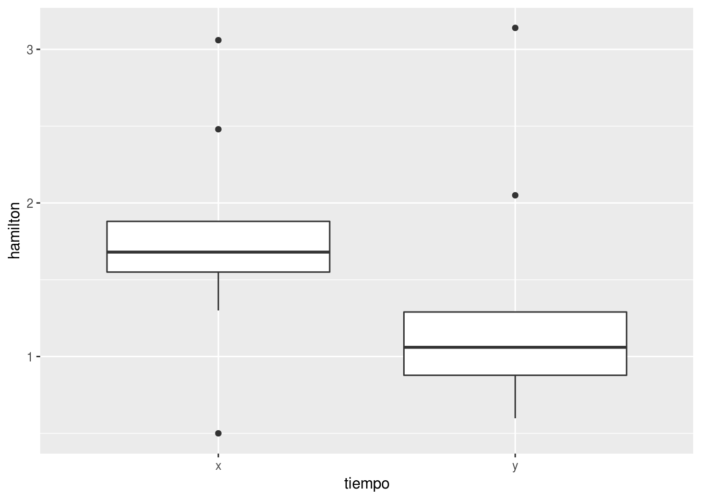

Capítulo 10 Ejercicios de dos muestras no paramétrico
10.1 Reproduciendo el algoritmo manualmente
Si bien el algoritmo está implementado en R, resulta importante entender como funciona. Una buena forma es realizar los cálculos manualmente. No vamos a hacer todo manualmente, vamos a aprovechar algunas funciones para hacer los pasos más tediosos.
Usando los datos del ejemplo de los lobos marinos:
library(tidyverse)
lobos_marinos <- tibble(Machos = c(15, 10, 14, 17, 16, 11, 15, 20, 13, rep(NA, 5)),
Hembras = c(9, 8, 5, 5, 5, 9, 9, 10, 13, 13, 15, 5, 12,6))
lobos_marinos## # A tibble: 14 x 2
## Machos Hembras
## <dbl> <dbl>
## 1 15. 9.
## 2 10. 8.
## 3 14. 5.
## 4 17. 5.
## 5 16. 5.
## 6 11. 9.
## 7 15. 9.
## 8 20. 10.
## 9 13. 13.
## 10 NA 13.
## 11 NA 15.
## 12 NA 5.
## 13 NA 12.
## 14 NA 6.Recordemos que primero cargué el paquete tidyverse que nos va facilitar
muchas funciones para trabajar con los datos. Luego creé el objeto
lobos_marinos que contiene los datos de la longitudes de raneyas consumidas
por machos y hembras. Notarás que usé una función nueva, rep(). Lo que hace
es repetir la secuencia que quieras el número de veces indicados. En este caso
NA (not available, no disponible) cinco veces. Esto lo hice porque los
data frame son estructuras rectangulares de datos y todas las columnas deben
tener el mismo número de observaciones. Luego, se puede ver el resultado
escribiendo el nombre del objeto.
Ahora ya tengo los datos, pero para ordenarlos debo tener los largos en una columna, sin perder de vista que datos corresponden a machos y cuales a hembras.
## # A tibble: 28 x 2
## Sexo LT
## <chr> <dbl>
## 1 Machos 15.
## 2 Machos 10.
## 3 Machos 14.
## 4 Machos 17.
## 5 Machos 16.
## 6 Machos 11.
## 7 Machos 15.
## 8 Machos 20.
## 9 Machos 13.
## 10 Machos NA
## # ... with 18 more rowsLa función gather() se encarga de juntar los datos. Por defecto junta todas
las columnas y devuelve dos. Una es la key (clave) que es el nombre de la
columna a la cual pertence a el valor de la columna value. Aquí le he dado
como nombres Sexo a la columna key y LT (Largo Total) a la de value.
Todo muy bonito, pero hay un problema. Tenemos los valores NA que no
necesitamos. Los podemos quitar con na.omit() que va eliminar todas las
filas que contengan NA.
## # A tibble: 23 x 2
## Sexo LT
## <chr> <dbl>
## 1 Machos 15.
## 2 Machos 10.
## 3 Machos 14.
## 4 Machos 17.
## 5 Machos 16.
## 6 Machos 11.
## 7 Machos 15.
## 8 Machos 20.
## 9 Machos 13.
## 10 Hembras 9.
## # ... with 13 more rowsYa no están las filas con NA. Hay que tener mucho cuidado cuando usamos
na.omit porque esto elimina la fila con tan solo un valor de NA y puede
que falte un dato pero ¡los otros sirvan!
Ya están los datos en el formato adecuado. Ese formato se conoce como largo; una fila corresponde a una observación. Ahora podemos comenzar con el algoritmo que está la sección de teoría 9.3.
El primer paso es rankear los datos. Recordemos que si hay empates se debe
poner el valor promedio de los rangos de cada uno. Es decir que si tenemos
cada dos datos son 10 y suponiendo que a cada uno le asignamos el rango 11 y 12.
Entonces el valor que le corresponde es el promedio de 11 y 12, 11.5.
Afortunadamente, la función rank() tiene un argumento para indicar como queremos
definir los empates. Lo que pide el algoritmo es la media que equivale colocar
el argumento ties = "average".
lobos_marinos <- lobos_marinos %>%
gather(key = Sexo, value = LT) %>%
na.omit() %>%
mutate(rango = rank(x = LT, ties = "average"))
lobos_marinos## # A tibble: 23 x 3
## Sexo LT rango
## <chr> <dbl> <dbl>
## 1 Machos 15. 19.0
## 2 Machos 10. 10.5
## 3 Machos 14. 17.0
## 4 Machos 17. 22.0
## 5 Machos 16. 21.0
## 6 Machos 11. 12.0
## 7 Machos 15. 19.0
## 8 Machos 20. 23.0
## 9 Machos 13. 15.0
## 10 Hembras 9. 8.00
## # ... with 13 more rowsUsé la función mutate() que agrega una columna a un data frame. Bien, ya
tengo los rangos y he resuelto el problema de los empates en un solo paso
gracias a la función rank(). Guardé los resultados con el mismo nombre porque
no modifiqué los datos originales, sino que solo agregué variables nuevas.
Ahora podemos calcular el estadístico \(W\) que igual a la suma de los rangos de la población 1. Recordemos que la definición de población 1 y 2 es totalmente arbitraria.
## # A tibble: 2 x 3
## Sexo W N
## <chr> <dbl> <int>
## 1 Hembras 118. 14
## 2 Machos 158. 9Aquí hay dos nuevas funciones. La primera, group_by(), agrupa los valores de
acuerdo a la/s columna/s especificadas. En este caso Sexo. En segundo lugar,
la función summarize resume los datos según las funciones que especifiquemos.
Aquí, sumamos los valores de la columna rango según la columna sexo.
Estos valores que calculamos sirven si los empates son pocos. ¿Pero realmente son pocos? Podemos comprobarlo con la ayuda de otra función:
## [1] 0.6521739La función table() calcula las frecuencias de los valores y usé esas
frecuencias para ver cuantos de esos se repiten, es decir que la frecuencia es
mayor a 1. Y dividí la suma de los frecuencias de valores repetidos por el N
total. No tienen que entender todo el código de arriba, pero eso es lo que
hice. Entonces, el 65% de los valores están empatados. Es un porcentaje alto de
los datos. Lo que justifica calcular el [estadístico mucho mas complejo][w-con-empates].
Es una formula larga que puede dar lugar a errores. Hay varios valores que se usan varias veces y conviene calcularlos antes.
lobos_marinos_W_N <- lobos_marinos %>%
group_by(Sexo) %>%
summarise(W = sum(rango),
N = n())
N1 <- lobos_marinos_W_N$N[1]
N2 <- lobos_marinos_W_N$N[2]
N1N2 <- N1 * N2
N1_N2 <- N1 + N2
W <- lobos_marinos_W_N$W[1]
Ri2 <- sum(lobos_marinos$rango^2)
(W - N1*(N1_N2+1)/2) /
sqrt((N1N2/(N1_N2*(N1_N2-1))*Ri2 - (N1N2*(N1_N2+1)^2)/(4*(N1_N2-1))))## [1] -3.199432wilcox_empates <- function(r1, r2){
W <- sum(r1)
r <- c(r1, r2)
N1 <- length(r1)
N2 <- length(r2)
N1N2 <- N1 * N2
N1_N2 <- N1 + N2
Ri2 <- sum(r^2)
(W - N1*(N1_N2+1)/2) /
sqrt((N1N2/(N1_N2*(N1_N2-1))*Ri2 - (N1N2*(N1_N2+1)^2)/(4*(N1_N2-1))))
}
rango_machos <- lobos_marinos %>% filter(Sexo == "Machos") %>% pull(rango)
rango_hembras <- lobos_marinos %>% filter(Sexo == "Hembras") %>% pull(rango)
wilcox_empates(rango_machos, rango_hembras)## [1] 3.199432Lo primero es probar que lo que pretendemos convertir en función funcione como
esperamos fuera. Luego, es más fácil convertir el código en función. No vamos a
entrar en detalles ahora sobre las funciones. Solo tienen que saber que se crean
con function, se definen los argumentos, el código a ejecutar y se guarda como
un objeto.
Ejercicio 3.3 1. Notarán que los resultados son iguales pero de signo opuesto. ¿Por qué?
- Implementen el algoritmo para calcular la U de Mann-Whitney.
10.2 Funciones no paramétricas en R
Los ejercicios a continuación deben realizarse utilizando pruebas no paramétricas. La prueba de Wilcoxon o Mann-Whitney para dos muestras o la prueba de rangos con signos de Wilcoxon para muestras apareadas.
En R, la función wilcox.test() realiza esta pruebas para dos muestras o
muestras apareadas. Por ejemplo, dados estos datos de constante de permeabilidad
de la membrana corioaminiótica humana a término (x) y entre 12 y 26 semanas
de gestación (y). La hipótesis alternativa de interés es que hay mayor
permabilidad de esta membrana al término del embarazo.
x <- c(0.80, 0.83, 1.89, 1.04, 1.45, 1.38, 1.91, 1.64, 0.73, 1.46)
y <- c(1.15, 0.88, 0.90, 0.74, 1.21)
perm <- data.frame(muestra = rep(c("x", "y"), times = c(length(x), length(y))),
permeabilidad = c(x, y))Los datos son de Hollander & Wolfe (1973), 69f. Aquí, los guardamos como
x e y. Luego los reunimos en un data frame para poder gráficar con
ggplot. Para esto queremos que quede en una columna los valores, que se puede
realizar con función c() que concatena los valores que le indiquemos.
Y además, tenemos que agregar una columna que indique si ese valor es de la
muestra x o de y. Se podría usar c() y repetir tantas veces como sea
necesario x e y manualmente. Pero es aburrido y seguramente nos equivocaremos. Y
si para algo se hicieron las máquinas es para que nosotros no tengamos que hacer
las tareas aburridas (o que al menos nos lleven menos tiempo). Para que lleve
menos tiempo usamos la función rep()que repite el una secuencia la cantidad
de veces que indiquemos (el argumento times). Para obtener la cantidad de
veces que cada una debe repetirse usamos la función length() que nos devuelve
la longitud cada uno de esos objetos.
Siempre es recomendable graficar los datos antes de analizarlos. Nos va a revelar mucha información y posibles problemas solo con mirarlos. Hay que graficar los datos tal cual están, ya que si solo graficamos las medidas de resúmen típcas hay información que puede quedar escondida.
Aunque también podemos combinar este gráfico con un boxplot y obtener un poco más de información.
Graficamente, parece ser que la permeabilidad es mayor a término que en menores semanas de gestación. Pero, ¿es significativa estadísticamente?. Para responder esta pregunta vamos a usar la prueba de Wilcoxon para dos muestras.
La función wilcox.test tiene varios argumentos. Por un lado, debemos especificar
los objetos que contienen los datos, x e y en nuestro caso. Y en luego,
la hipótesis alternativa, la distribución de x es mayor (greater),
menor (less) o distinta (mayor o menor, two.sided) que y. Es importante
tener esto en claro. Siempre se trata del primero versus el segundo.
##
## Wilcoxon rank sum test
##
## data: x and y
## W = 35, p-value = 0.1272
## alternative hypothesis: true location shift is greater than 0Dado que \(P[X>x]=0.1272\) no rechazamos la hipótesis nula.
10.3 Fórmulas
Otra forma muy común de analizar datos es utilizando fórmulas. Estas no son
fórmulas algebraicas como ya vimos en la parte de gráficos con ggplot2.
Las formulas en R describen como se relacionan las variables. Por un lado,
tenemos las variables dependientes y por otro las independientes y estás
separadas por la virguilla (~). Por ejemplo: variable_dependiente ~ variable_independiente. Por ahora solo vamos a trabajar con una sola variable
dependiente e independiente, pero es posible describir todo tipo de modelos
mediante esta interfaz. El ejemplo anterior puede ser analizado usando la
interfaz de fórmula:
# Debemos usar el argumento data para que la función sepa donde estan los datos.
# Prueben que sucede si no está.
wilcox.test(formula = permeabilidad ~ muestra, alternative = "greater", data = perm)##
## Wilcoxon rank sum test
##
## data: permeabilidad by muestra
## W = 35, p-value = 0.1272
## alternative hypothesis: true location shift is greater than 0Presten atención a que hay que agregar el argumento data. Sin este argumento
la función wilcox.test() no sabe donde buscar los datos.
Como ver, los resultados son iguales. Pero hay que tener cuidados. El orden de
los datos puede no ser el mismo que usaron en la versión sin fórmula. Esto se
debe a que los niveles de los factores se asignan por orden alfabético si no
los especificamos. Entonces, el orden puede ser distinto, y recordemos que la
prueba especifica el primero vs el segundo. Por ejemplo, si vemos los niveles
de muestra, no dice que tiene dos niveles, x y luego y.
## [1] x x x x x x x x x x y y y y y
## Levels: x yVeamos que pasa si cambiamos el orden de los niveles:
## [1] x x x x x x x x x x y y y y y
## Levels: y xAhora volvamos a hacer el análisis igual que antes:
##
## Wilcoxon rank sum test
##
## data: permeabilidad by muestra
## W = 15, p-value = 0.8968
## alternative hypothesis: true location shift is greater than 0¡Noten que los resultados son muy distintos!
10.4 Muestras apareadas
En el caso de tener muestras apareadas, la función para realizar la prueba
la prueba de Wilcoxon de rangos con signos es la misma que usamos antes
wilcox.test(). Debemos indicar que se trata de muestras apareadas con
el argumento paired = TRUE. Además, no acepta formulas. Ejemplo de la ayuda
de wilcox.test():
## One-sample test.
## Hollander & Wolfe (1973), 29f.
## Hamilton depression scale factor measurements in 9 patients with
## mixed anxiety and depression, taken at the first (x) and second
## (y) visit after initiation of a therapy (administration of a
## tranquilizer).
x <- c(1.83, 0.50, 1.62, 2.48, 1.68, 1.88, 1.55, 3.06, 1.30)
y <- c(0.878, 0.647, 0.598, 2.05, 1.06, 1.29, 1.06, 3.14, 1.29)
wilcox.test(x, y, paired = TRUE, alternative = "greater")##
## Wilcoxon signed rank test
##
## data: x and y
## V = 40, p-value = 0.01953
## alternative hypothesis: true location shift is greater than 0
Como no tiene opción para usar formula, tampoco funciona el argumento data.
Solo funciona si las columnas están directamente disponibles en el espacio de
trabajo. Hacerlo implica de alguna forma desorganizar los datos, que ya no
estarán juntos sino que estarán separados en el espacio de trabajo. Por ejemplo,
si hay columnas antes y después dentro de data frames diferentes,
también a hay que poner alguna indicación de donde vino esa columna. Hay una
manera mejor de hacer esto. Usando el operador %$%exposition, del paquete
magrittr. Funciona de manera similar %>% pipe, pero expone los nombres
de las columnas del lado izquierdo a la función de lado derecho.

10.5 Problemas
Antes de comenzar bajen el archivo donde realizarán su informe reproducible. En la consola copien este código:
download.file("http://bit.ly/informe-dos-muestras-NP", "informe-dos-muestras-NP.Rmd")
Pueden abrirlo desde la pestaña de archivos, a la derecha. Cambien el nombre por el suyo en el encabezado y mientras leen este capítulo respondan las preguntas.
En todos los casos indicar la hipótesis nula y la alternativa. Graficar y realizar la prueba apropiada.
Los datos de los problemas ya se encuentran guardados. Hay que cargarlos con:
1.- Un investigador, trabajando con una especie de ratones de campo, desea saber si los ejemplares provenientes del valle son de similar tamaño a los provenientes de la meseta. Para ello realizó capturas de ratones en ambos ambientes, midiendo el peso en gr de los ejemplares capturados. Los datos obtenidos fueron:
## # A tibble: 35 x 3
## Peso Ambiente row
## <dbl> <fct> <int>
## 1 38. Valle 1
## 2 47. Valle 2
## 3 50. Valle 3
## 4 51. Valle 4
## 5 39. Valle 5
## 6 39. Valle 6
## 7 44. Valle 7
## 8 40. Valle 8
## 9 46. Valle 9
## 10 50. Valle 10
## # ... with 25 more rows¿Qué conclusión se puede sacar con estos datos?
2.- Una empresa pesquera desea evaluar si existen diferencias entre dos jefes de planta que trabajan en uno de sus buques factoría. De acuerdo a lo expresado por el capitán del buque, el Jefe 1 aprovecha mejor la captura que el Jefe 2. Para estudiar esta cuestión embarcaron a ambos jefes de planta en un mismo viaje de pesca y les asignaron aleatoriamente a cada uno de ellos los lances que debían procesar. En cada lance, un empleado imparcial de control de calidad registraba el porcentaje de descarte producido a partir de la captura. Los resultados obtenidos fueron:
## # A tibble: 35 x 3
## Descarte Jefe row
## <dbl> <dbl> <int>
## 1 17. 1. 1
## 2 10. 1. 2
## 3 15. 1. 3
## 4 22. 1. 4
## 5 15. 1. 5
## 6 9. 1. 6
## 7 20. 1. 7
## 8 14. 1. 8
## 9 21. 1. 9
## 10 19. 1. 10
## # ... with 25 more rows¿Tiene razón el capitán?
Definición 10.1 Más adelante no podrán usar la formulas para hacer las pruebas apareadas.
Para hacer comparaciones de datos apareados cada unidad muestral debe estar en
una fila, con dos columnas: una para antes y otra para el después. Sin embargo,
esta forma no permite utilizar el argumento data para indicar donde se
encuentran los datos. Por eso, hay que hacer que estén disponibles para la
función. Una forma es usar el operador de exposición %$%; expone los
nombres del objeto que está a la izquierda del mismo:
datos %$% wilcox.test(x = x, y = y, paired = TRUE)
paired = TRUE para indicar que
los datos son apareados.
3.- En un estudio clínico, se desea evaluar si una cierta droga disminuye o no la concentración de un virus en sangre. Para ello se utilizaron 17 cobayos infectados, registrándose previamente al inicio de la experiencia la concentración del virus en sangre. Luego de finalizado el tratamiento con la droga, se volvió a estudiar la concentración del virus en los cobayos. Los resultados obtenidos fueron:
## # A tibble: 17 x 3
## Ejemplar Antes Despues
## <dbl> <dbl> <dbl>
## 1 1. 4. 6.
## 2 2. 16. 12.
## 3 3. 18. 14.
## 4 4. 9. 7.
## 5 5. 18. 18.
## 6 6. 11. 11.
## 7 7. 3. 2.
## 8 8. 16. 14.
## 9 9. 13. 10.
## 10 10. 9. 6.
## 11 11. 6. 1.
## 12 12. 13. 12.
## 13 13. 19. 19.
## 14 14. 4. 4.
## 15 15. 5. 7.
## 16 16. 17. 15.
## 17 17. 15. 14.¿Qué conclusiones puede Ud. sacar acerca de la efectividad del tratamiento?
4 - Un ecólogo desea evaluar en una especie de foca si el éxito reproductivo de las hembras está asociado al sexo de sus crías. Para ello utilizó información de una población que ha sido seguida durante varias generaciones, registrando para 15 hembras el número de nietos producidos por sus hijos e hijas. Los datos fueron:
## # A tibble: 15 x 3
## Ejemplar Hembra Macho
## <dbl> <dbl> <dbl>
## 1 1. 128. 120.
## 2 2. 95. 111.
## 3 3. 104. 119.
## 4 4. 99. 111.
## 5 5. 111. 120.
## 6 6. 93. 109.
## 7 7. 132. 108.
## 8 8. 129. 130.
## 9 9. 127. 130.
## 10 10. 100. 119.
## 11 11. 122. 105.
## 12 12. 124. 132.
## 13 13. 94. 127.
## 14 14. 96. 126.
## 15 15. 127. 121.¿Depende el éxito reproductivo de las hembras del sexo de sus hijos?
5.- Una especie de ave pone dos huevos por temporada reproductiva. Se ha visto que de los dos pichones el primero en eclosionar tiene mayores probabilidades de sobrevivir. Un biólogo desea establecer si esta situación está relacionada con el peso del pichón al momento de la eclosión. Para ello registró el peso de los pichones al momento de la eclosión del huevo, obteniendo los siguientes datos:
## # A tibble: 17 x 3
## Nido Primer Segundo
## <dbl> <dbl> <dbl>
## 1 1. 102. 110.
## 2 2. 86. 95.
## 3 3. 112. 117.
## 4 4. 85. 119.
## 5 5. 91. 117.
## 6 6. 101. 94.
## 7 7. 102. 102.
## 8 8. 111. 96.
## 9 9. 116. 103.
## 10 10. 114. 120.
## 11 11. 83. 102.
## 12 12. 85. 98.
## 13 13. 105. 118.
## 14 14. 95. 106.
## 15 15. 107. 94.
## 16 16. 94. 108.
## 17 17. 99. 102.¿Cuál es la conclusión que debería sacar el biólogo?
6.- Un biólogo está estudiando el efecto del aprendizaje en la habilidad de los osos para capturar peces. Para ello registra el porcentaje de éxitos de captura durante una semana de 17 ositos cuando comienzan a pescar y repite el análisis 6 meses después. Los resultados obtenidos fueron:
## # A tibble: 17 x 3
## Oso Tiempo0 Tiempo6
## <dbl> <dbl> <dbl>
## 1 1. 42. 75.
## 2 2. 47. 61.
## 3 3. 58. 63.
## 4 4. 40. 74.
## 5 5. 56. 65.
## 6 6. 60. 54.
## 7 7. 45. 58.
## 8 8. 72. 53.
## 9 9. 63. 66.
## 10 10. 79. 77.
## 11 11. 43. 65.
## 12 12. 45. 52.
## 13 13. 79. 64.
## 14 14. 45. 65.
## 15 15. 42. 62.
## 16 16. 49. 54.
## 17 17. 53. 68.¿Mejora la capacidad de captura de los ositos con la experiencia?
7.- Los pingüinos de Magallanes hacen sus nidos en cuevas en las laderas o bajo de los arbustos. Un biólogo sostiene que el éxito reproductivo de las hembras que nidifican en las laderas es mayor que el de aquellas que lo hacen bajo los arbustos. Para poner a prueba esta hipótesis utilizó datos del número de pichones vivos que tuvieron durante su vida hembras que nidificaron en laderas y en arbustos. Las hembras pudieron identificarse debido a que fueron anilladas de pichones y no se registraron cambios en el tipo de nido que utilizaron a lo largo de la vida. Los datos obtenidos fueron:
Número de pichones producidos por hembras de pingüino de Magallanes a lo largo de su vida, discriminado por el tipo de nido que utilizaron.
## # A tibble: 32 x 3
## Pichones Nido row
## <dbl> <fct> <int>
## 1 10. Arbusto 1
## 2 13. Arbusto 2
## 3 7. Arbusto 3
## 4 7. Arbusto 4
## 5 11. Arbusto 5
## 6 11. Arbusto 6
## 7 8. Arbusto 7
## 8 11. Arbusto 8
## 9 8. Arbusto 9
## 10 12. Arbusto 10
## # ... with 22 more rows¿Está Ud. de acuerdo con el biólogo?
8.- Estudiando la dieta de un delfín y del lobo marino, un biólogo desea establecer si las tallas consumidas de calamares por estos predadores son similares. Utilizando regresiones alométricas estimó los largos dorsales del manto (LDM) a partir de los picos hallados en los contenidos estomacales. Los datos obtenidos fueron:
Tallas de calamares (LDM, cm) consumidos por delfines y lobos marinos.
## # A tibble: 37 x 3
## LDM Especie row
## <dbl> <fct> <int>
## 1 26.0 Delfín 1
## 2 21.0 Delfín 2
## 3 24.6 Delfín 3
## 4 20.9 Delfín 4
## 5 26.4 Delfín 5
## 6 23.9 Delfín 6
## 7 25.6 Delfín 7
## 8 24.2 Delfín 8
## 9 20.4 Delfín 9
## 10 23.3 Delfín 10
## # ... with 27 more rows¿Qué puede concluir sobre las tallas de los calamares consumidos por los delfines y lobos marinos?
9.- Para determinar si una droga es eficaz para disminuir la concentración de un virus en sangre, se seleccionaron al azar ratones infectados y se les inyectó la droga a evaluar. Otro grupo de ratones infectados fue utilizado como control empleándose un placebo en lugar de droga. Luego del experimento se midió la concentración del virus en sangre utilizando una escala apropiada. Los resultados fueron: Concentración del virus en sangre de los ratones tratados y del grupo control
## # A tibble: 24 x 3
## Virus Tratamiento row
## <dbl> <fct> <int>
## 1 34.4 Control 1
## 2 39.8 Control 2
## 3 26.6 Control 3
## 4 33.3 Control 4
## 5 37.3 Control 5
## 6 30.3 Control 6
## 7 16.2 Control 7
## 8 21.1 Control 8
## 9 43.4 Control 9
## 10 26.0 Control 10
## # ... with 14 more rows¿Es eficaz la droga para disminuir la concentración del virus en sangre?
10.- Se desea establecer si las poblaciones bonaerense y patagónica de anchoita presentan similares niveles de parasitosis por nematodes en músculo. Para ello se tomaron muestras aleatorias de anchoitas de ambas poblaciones y se determinó para cada ejemplar el número de larvas de nematodes alojadas en el músculo. Los resultados fueron: Número de larvas de nematodes en el músculo de anchoitas discriminadas por poblaciones.
## # A tibble: 41 x 3
## Larvas Anchoita row
## <dbl> <fct> <int>
## 1 14. Patagónica 1
## 2 36. Patagónica 2
## 3 26. Patagónica 3
## 4 23. Patagónica 4
## 5 14. Patagónica 5
## 6 36. Patagónica 6
## 7 26. Patagónica 7
## 8 23. Patagónica 8
## 9 14. Patagónica 9
## 10 26. Patagónica 10
## # ... with 31 more rows¿Existen diferencias entre poblaciones de anchoita con respecto a la parasitosis por nematodes en músculo?
11.- Un ecólogo desea determinar si la eficiencia de captura de dos especies de araña es similar. Para ello realizó un experimento donde seleccionó al azar ejemplares de cada especie, les permitió confeccionar sus telas y luego introdujo una mosca en cada caja. El ecólogo determinó para cada araña el tiempo en segundos que tardó en capturar la mosca. Los resultados fueron: Tiempo de captura de la mosca en segundos.
## # A tibble: 36 x 3
## Tiempo Especie row
## <dbl> <dbl> <int>
## 1 159. 1. 1
## 2 143. 1. 2
## 3 90. 1. 3
## 4 130. 1. 4
## 5 148. 1. 5
## 6 150. 1. 6
## 7 161. 1. 7
## 8 166. 1. 8
## 9 164. 1. 9
## 10 87. 1. 10
## # ... with 26 more rows¿Existen diferencias en las eficiencias de captura entre las especies de araña?
- Un productor de fruta fina está convencido que la producción en el Bolsón es más alta que en Esquel. Para ello tomó datos producción de distintas parcelas en ambas localidades. Sabiendo que el azar tenía algo que ver con la estadística, se preocupó de seleccionar al azar las parcelas. Los datos obtenidos fueron: Producción de fruta fina (kg) en cada parcela, discriminada por localidad
## # A tibble: 35 x 3
## Producción Localidad row
## <dbl> <fct> <int>
## 1 56.6 Esquel 1
## 2 90.7 Esquel 2
## 3 29.7 Esquel 3
## 4 30.0 Esquel 4
## 5 61.4 Esquel 5
## 6 46.0 Esquel 6
## 7 61.3 Esquel 7
## 8 59.0 Esquel 8
## 9 61.4 Esquel 9
## 10 52.1 Esquel 10
## # ... with 25 more rowsUna vez tomados los datos, el productor acude a Ud. en busca de ayuda para responder su pregunta. ¿Qué le dirá al productor?